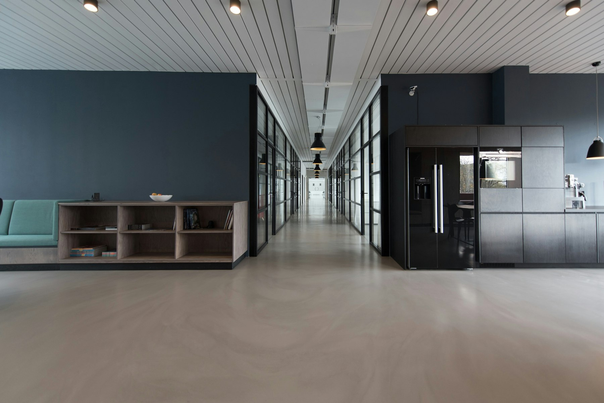

Settlement and Education Support
외국인의 한국 정착과 사회통합을 지원합니다.
참조은다문화는 동포체류지원센터와 법무부 사회통합·조기적응 사업을 운영하는 전문기관입니다.
→ 주요 서비스 보기Find a service
필요한 지원을
바로 찾아 주세요



Integration
02 · 법무부 지원사업
사회통합프로그램 (KIIP)
한국어와 한국사회 이해교육으로 적응과 사회통합을 지원합니다. 2011년부터 법무부 운영기관으로 지정되어 왔습니다.
Adaptation
03 · 법무부 지원사업
조기적응프로그램
입국 초기에 필요한 한국생활 정보와 기초 적응을 안내합니다. 2018년 조기적응 지원센터 지정 이후 이어 오고 있습니다.
Next programs
교육과 지역 안에서
자립을 이어 갑니다
법무부 관련 사업 다음으로 민간자격증, 지역사회서비스, 평생교육을 운영합니다.
Education / LMS
필요할 때, 어디서나
학습합니다
기관 프로그램을 수강한 뒤 강의실에서 이어서 배울 수 있습니다. 실제 로그인은 구축 단계에서 연결됩니다.
01온라인 강의목록에서 이어서 수강합니다. 영상과 자료가 한 화면입니다.
02수강과정사회통합, 자격과정, 문해·직업훈련을 고릅니다.
03학습지원자료실, 학습 문의, 출석·이수를 한곳에서 봅니다.
04나의 강의실PC와 모바일을 함께 지원합니다.
Philosophy
우리 모두 각자가 가진 능력과 개성을 발휘하여, 원하는 분야의 꿈과 미래를 만들어 나가면 좋겠습니다.
경험과 문화적 배경의 차이를 존중하고, 교육으로 학습·취업·사회참여를 잇습니다.
Integration
Education
Work
Community
News
기관소식
교육문의, 사업제휴를 기다리고 있습니다
과정과 센터 이용, 기관 제휴는 문의로 남겨 주세요.